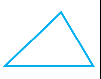

Triíngulo Acutángulo

Los triángulos acutángulos son aquellos cuyos tres ángulos internos son agudos, ya que miden menos de 90º.
Esto quiere decir que un triángulo cuyos ángulos interiores miden 45º, 80º y 55º, por ejemplo, es un triángulo acutángulo: sus tres ángulos son agudos. Si tuviera un ángulo que mide 90º, en cambio, sería un triángulo rectángulo por la presencia del ángulo recto. En cambio, si uno de sus ángulos fuera obtuso (más de 90º), recibiría la calificación de triángulo obtusángulo.